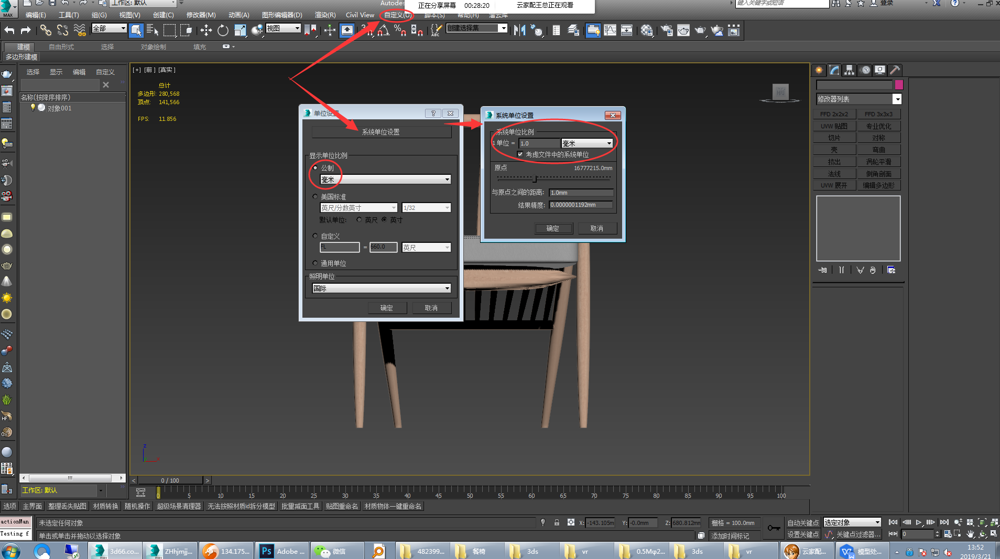
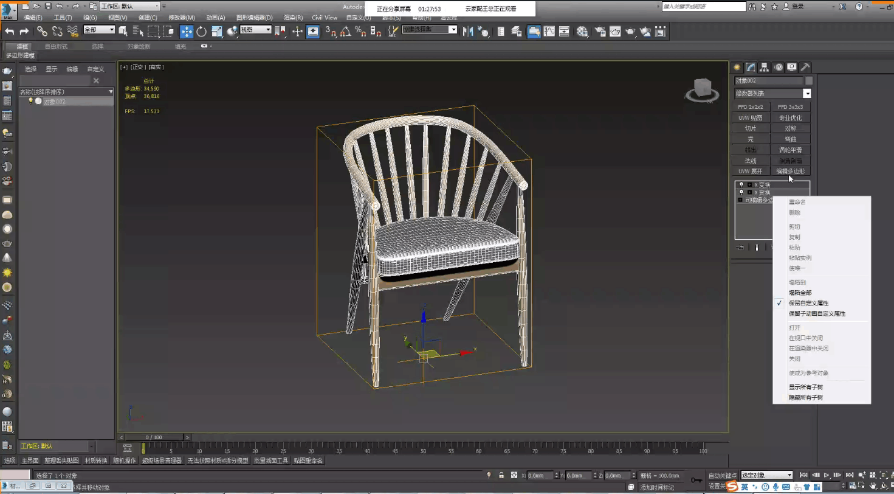
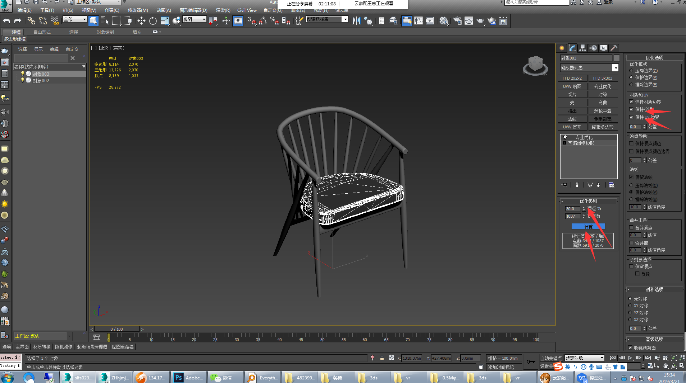
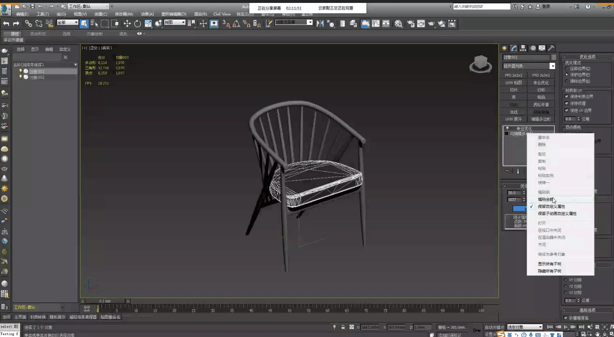

转模处理步骤
1.模型下载
https://www.justeasy.cn/index.html https://www.3d66.com/model.html2、（导出VR文件）打开要处理的模型，另存为导出VR文件的MAX文件，重命名为（英文+数字），注：不超过八位数
3、调整材质和贴图导出VR文件：
a、解散全部组,去掉涡轮平滑，转换为可编辑多边形后附加成一个整体

b、单位统一调整为毫米
c、停止启用Gamma校正
d、用场景助手插件把模型的坐标轴调整到模型
e、顶视图中通过旋转调整模型朝向（正面向前）
f、模型世界坐标轴归零(鼠标右键点击即可归零)
j、在元素模式下，选中模型所有元素分离为对象，删除掉除分离对象以外的东西
k、调整模型材质及贴图
01、按m键打开材质编辑器，重置材质编辑器窗口，拾取模型材质。Shift+T面板贴图路径正确、贴图重命名插件修改贴图名字（字母加数字，不超过八个字符）
l、重置变换俩次，查看模型是否反面。如果有反面，执行翻转或者法线命令，再重置变换俩次，塌陷全部；没有反面直接塌陷全部。
m、调整渲染设置（渲染设置里面不能有贴图，可先调回默认扫描线渲染器，再切换到VR渲染器即可
o、场景清理
P、另存为导出VR文件的MAX
q、导出VR文件
四、（导出3DS）打开导出VR的MAX文件，另存为导出3DS的MAX文件。
a、材质转换：转换所有材质为标准材质
b、贴图和路径：复制VR文件夹里面的贴图到3DS文件夹；Sitft+T面板里面调整贴图路径为3DS文件夹。
c、调整3DS文件夹中贴图大小64X**，最大不超过500X**）
d、减面（简单模型三角面不超过8千，复杂模型三角面数不超过3万）：
1、删除掉所有看不到的面
2、调整焊接阈值，不改变模型造型的基础上焊接顶点
3、数字键7显示模型面数统计面板，Alt+b设置查看方式为三角形面数
4、专业优化
a将面数较高的元素分离来，用专业优化工具减面
 4、全部附加成一个整体，重置变换俩次，转换为可编辑多边形
5、导出3DS文件
6、截取缩略图、保存模型尺寸、保存导出3DS的MAX文件
7、将模型3DS文件拖拽到查看器中，检查3DS模型，若没有问题即可上传模型。
五、（模型上传）如果文件过大、网络速度较差，文件上传速度会变慢，请耐心等待上传完成再进行下一步操作。文件右边的删除按键，变成白色说明贴图上传完成，灰色的话说明正在上传。
1、打开模型上传链接，登录后准备上传模型。
2、选择模型/素材库，选择测试/测试/测试三级管理目录
3、点击右下角新增加按键
4、录入模型
A、名称（复制并粘贴3ds文件名称）
B、中文名称（重命名模型）
C、长/宽/高
D、素材库（选择素材库，点击右下角上传本地文件，上传3DS文件夹中除了模型尺寸以外的所有文件）
E、渲染库（选择渲染库，点击右下角上传本地文件，上传VR文件夹中的所有文件）
F、确定（点击确定，完成模型上传）
六、测试及缩略图的调整
A、画一个简单户型，在平台上测试模型渲染效果（位置、尺寸、效果）
B、打开缩略图模板，渲染并保存缩略图
C、调整缩略图大小为150x150像素，替换掉原来的缩略图。